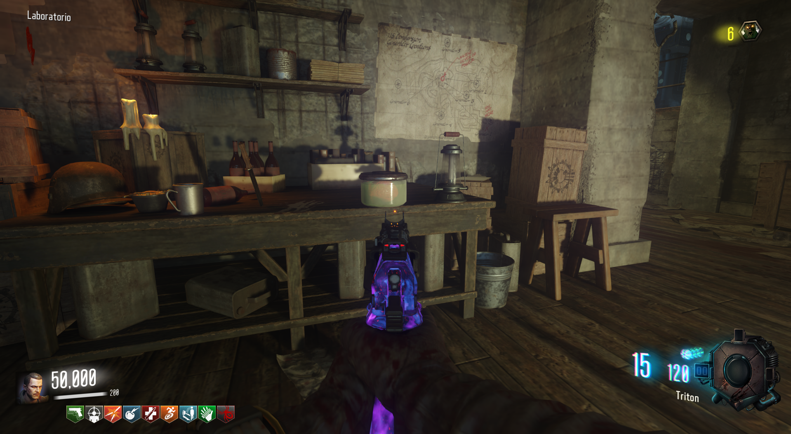
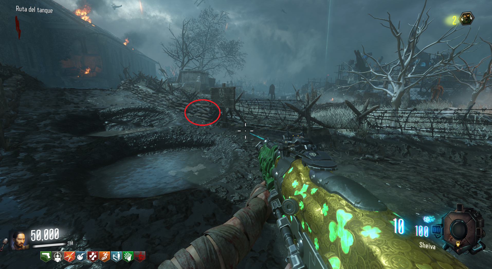
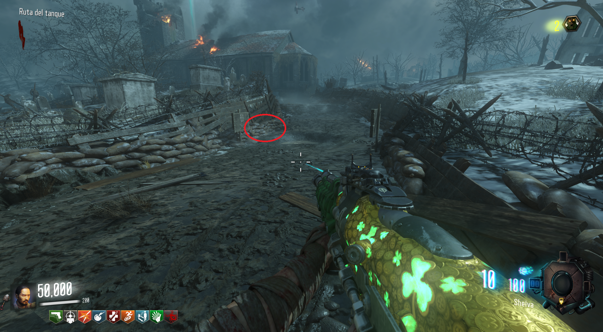
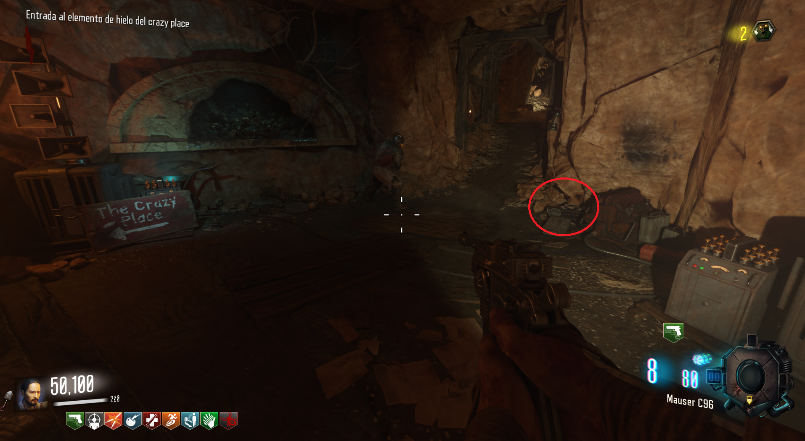
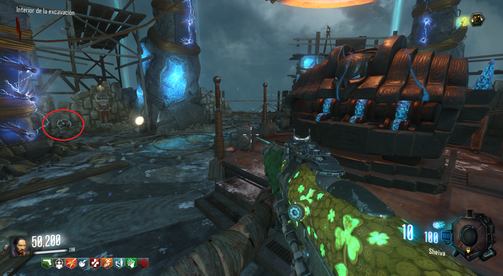
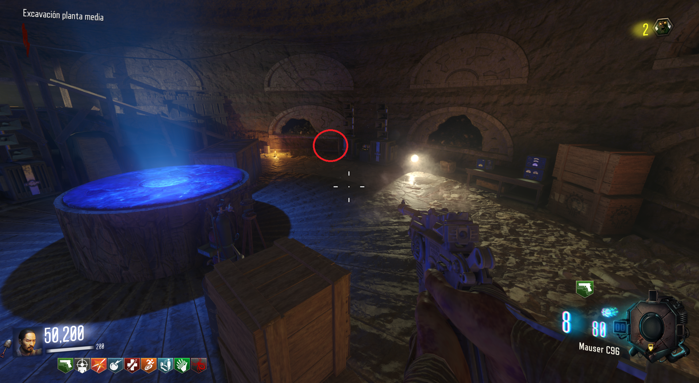
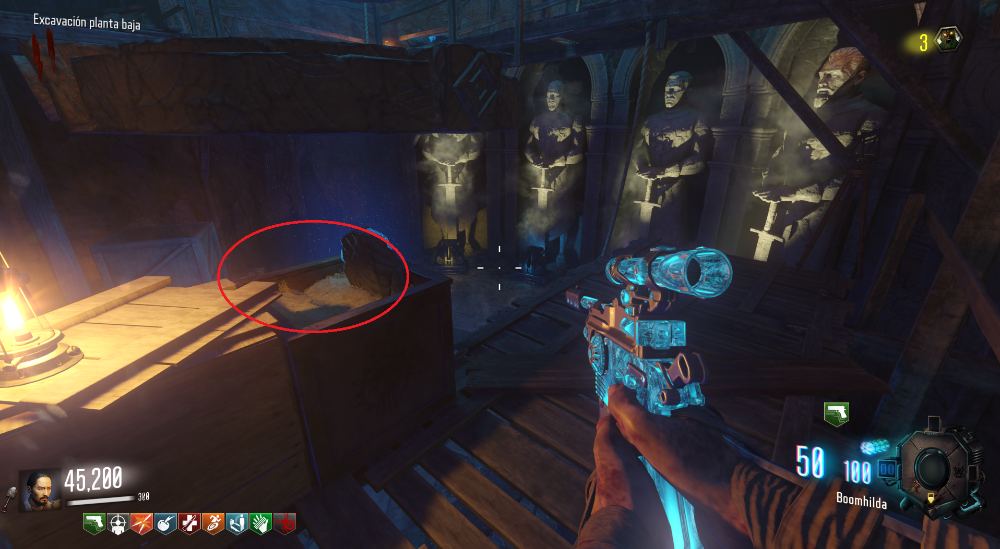
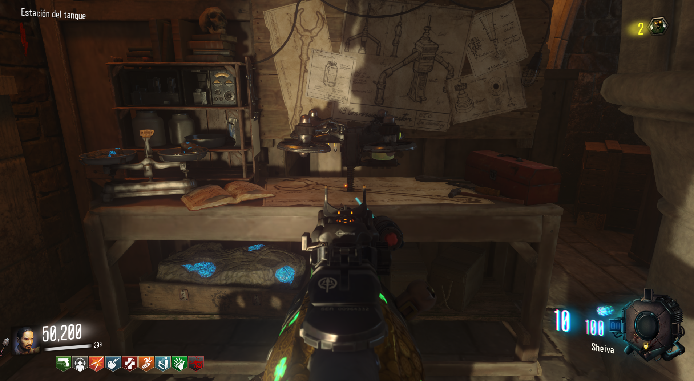

Primera parte: En el Spawn. justo a la izquierda de las escaleras.

Segunda parte: En la zona de la iglesia.

Camino del tanque hacia generador 4.

Camino del tanque hacia la iglesia.

Dentro de la mina de hielo.
Tercera parte: En el Sitio de Excavación.

A la izquierda del PaP.

Bajo el PaP, donde encontramos el gramófono.

Encima de una caja, cerca de los primis.
Fabricar: Bajo la iglesia es el más recomendado.
